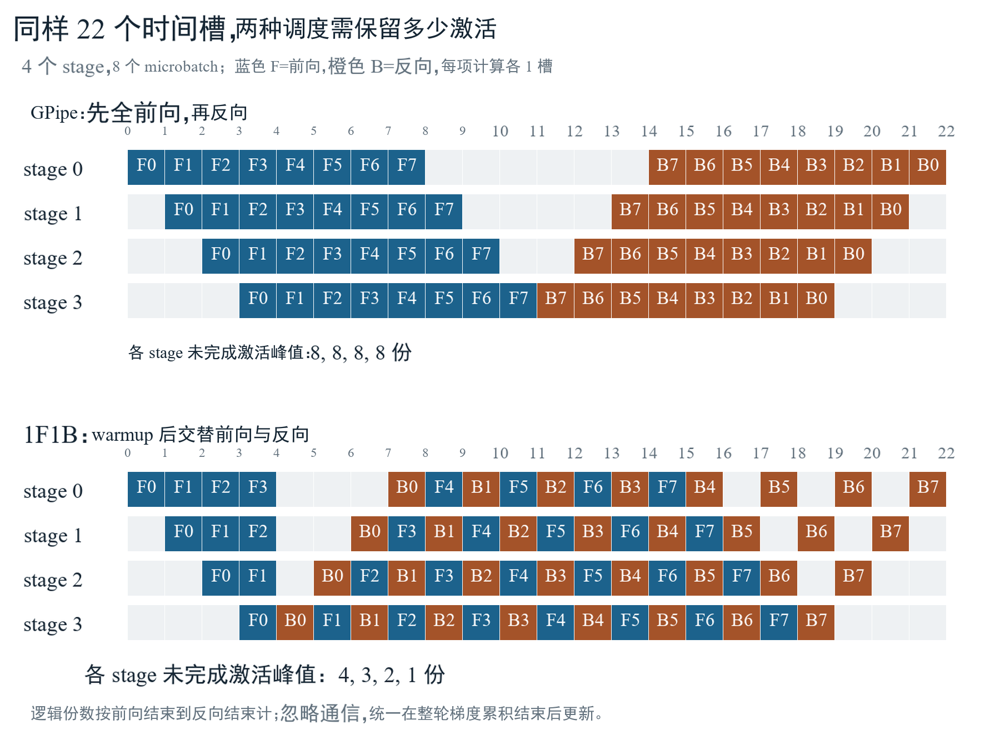
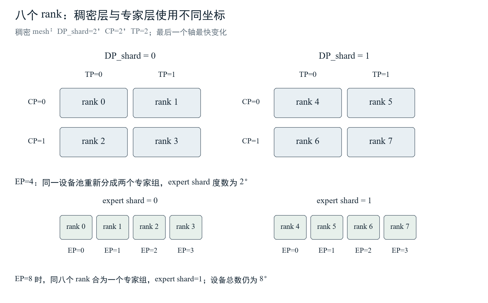

代码块旁的行号链接指向本课采用的提交，仓库及许可见课末。
1 MLP 的列并行与行并行
一层放不下时，可以把权重拆开；希望一层算得更快时，也可以让多张卡分担矩阵乘法。两种动机都需要保持同一数学输出。先用无 bias 的两层 MLP：X=[T,D]，W₁=[D,F]，W₂=[F,D]，中间激活函数逐元素作用。这里 T 合并了 batch 与本 rank 参与计算的 token 位置；书写采用 XW，PyTorch Linear 的 weight 则按 [out,in] 保存。
将 W₁ 沿 F 分成 p 个输出列块，每个 rank 获得 [D,F/p]，由完整 X 算出 [T,F/p]。各 rank 对自己这部分做激活，再与 W₂ 对应的 [F/p,D] 相乘，得到 [T,D] 的部分和。最后求和完成 Y。中间的 F 维分片自然衔接，因此无需先把所有 Hi 拼成 [T,F]。
TP=2 的完整数例；φ 使用 ReLU，所有中间值均为正
| 对象 | rank 0 | rank 1 |
|---|---|---|
| 共同输入 | X=[1,2] | X=[1,2] |
| W₁ 的列块 | [[1,0],[0,1]] | [[1,2],[1,−0.5]] |
| Hi=XW₁,i | [1,2] | [3,1] |
| W₂ 的行块 | [[1,0],[0,1]] | [[1,1],[2,−1]] |
| 输出部分和 Yi | [1,2] | [5,2] |
| 求和后的输出 | [6,4] | [6,4] |
“列并行”和“行并行”沿用数学矩阵 XW 的名称。对应 PyTorch 存储，列并行 weight=[F/p,D]，切第 0 维；行并行 weight=[D,F/p]，切第 1 维。看见源码 Shard(0) 就直接称作 row parallel，会把存储约定与代数约定混在一起。
代码 1 本地乘法产生完整输出形状的部分和
output_parallel = self._forward_impl(
input=input_parallel,
weight=self.weight,
bias=None,
gradient_accumulation_fusion=self.gradient_accumulation_fusion,
allreduce_dgrad=allreduce_dgrad,
sequence_parallel=False,
tp_group=None,
grad_output_buffer=None,
gtp_remat_size=self.gtp_remat_size,
)input_parallel 已沿输入特征切分，self.weight 与它配对。这里 bias=None，且 sequence_parallel=False：内部 GEMM 使用已经准备好的局部输入，输出归约交给后续分支。方法名中的 parallel 不能替代对每个维度的核对。
代码 2 普通 TP、SP 与显式专家通信走不同输出路径
# All-reduce across all the partitions.
if self.explicit_expert_comm:
assert self.skip_bias_add
output_ = output_parallel
elif self.sequence_parallel:
output_ = reduce_scatter_to_sequence_parallel_region(
output_parallel, group=self.tp_group
)
else:
output_ = reduce_from_tensor_model_parallel_region(output_parallel, group=self.tp_group)
if not self.skip_bias_add:
output = (output_ + self.bias) if self.bias is not None else output_
output_bias = None
else:
output = output_
output_bias = self.bias
return output, output_bias普通 TP 调用 reduce_from_tensor_model_parallel_region，将各 Yi 相加。SP 分支选择 ReduceScatter；explicit_expert_comm 则保留部分结果给外部专家路径处理，不能据这一分支推出它已经是完整输出。
普通行并行 bias 在归约之后添加，避免 p 个 rank 各加一次后变成 p 倍。若 skip_bias_add=True，返回独立的 output_bias，后继融合算子负责在正确位置应用。

图 1：同一 MLP 的特征分片与 token 分片。Partial 表示尚待相加的贡献。
对单行输入 [a,b] 设权重的两列为 u、v。若一张卡拿 u，另一张拿 v，各自已求完一个输出内积，合起来只需按列拼接。若每卡分别拿权重的第一行与第二行，则输出的每一列都缺另一张卡的加项，需要逐列求和。先找矩阵乘的归约维，再决定拼接还是求和，便能判断下一层可否直接消费本地分片。
情境 一层有两个输入特征、两个输出通道。按输入特征将权重拆到两个 rank，同一个 token 在 rank 0 得到局部乘积 [4,−2]，在 rank 1 得到 [2,6]。模型参数只有一个输出偏置 b=[1,1]，两卡各持有它的一份副本。
问题 先算没有偏置时这个 token 的完整输出。若实现先在每卡给两项结果加 b，再把两个向量逐元素相加，输出会是什么？写出只需一次求和归约的正确计算顺序，并指出两个通道的误差。
答案
结论 正确的无偏置输出为 [6,4]，加一次 b 后应为 [7,5]。两卡各加一次再归约会得到 [8,6]，每个通道高出 1。
推导 两张卡切分了同一输出的求和项，所以对应通道要相加：[4,−2]+[2,6]=[6,4]。
若提早加偏置，两卡分别变成 [5,−1] 和 [3,7]，归约时也把两份偏置相加。可先对局部乘积做 SUM，得到完整输出后，每个持有完整结果的 rank 在自己的输出副本上加一次 b。
2 张量并行的输入梯度归约
对上一节输入 X，两个 W₁ 分片分别产生不同输出特征，但损失都依赖同一个 X。因此每个 rank 只算出了 dX 的一部分，需要归约。给定 dY=[1,1]，数例中 dH=[1,1,2,1]；rank 0 的 dX 为 [1,1]，rank 1 为 [4,1.5]，求和得到 [5,2.5]。漏掉归约会让前一层只看到部分路径的梯度。
行并行 W₂ 的局部输入 Hi 只需要自己的 dHi=dY·W₂,iᵀ，所以这一处可以本地完成。常见非 SP 的两层 MLP，在前向末尾归约一次 [T,D]，在反向回到 X 时再归约一次 [T,D]。Attention 的投影组合还会增加对应通信；整层 Transformer 的成本不能只数 MLP 的一次前向。
代码 3 先算 dX，再发起异步输入梯度归约
grad_input = grad_output.matmul(weight)
if ctx.sequence_parallel and wgrad_compute:
# pylint: disable=possibly-used-before-assignment
handle.wait()
if wgrad_compute:
grad_output, total_input = prepare_input_tensors_for_wgrad_compute(
grad_output, total_input
)
if ctx.allreduce_dgrad:
# Asynchronous all-reduce
handle = torch.distributed.all_reduce(grad_input, group=tp_group, async_op=True)
# Here we rely on CUDA_DEVICE_MAX_CONNECTIONS=1 to ensure that the
# all-reduce is scheduled before the weight gradient computationgrad_output.matmul(weight) 对应 dX 的局部贡献。allreduce_dgrad 开启时，把通信异步提交，再继续权重梯度计算。前面的输入 AllGather 也可能异步进行，但在 wgrad 真正消费输入前有 handle.wait()。
源码注释说明调度对 CUDA_DEVICE_MAX_CONNECTIONS 的依赖。一个 async_op=True 只表示调用方式，实际 overlap 仍受计算依赖、stream 调度和带宽竞争影响。本文没有执行这条训练路径。
TP 内的 SUM 表达把同一个数学结果的不同贡献加起来。DP 的归约通常表达不同样本梯度的平均。将 TP 归约随意除以 p，会改变网络函数；将 DP 的样本权重忽略，又会改变训练目标。两种 group 的成员、归约含义和归一化位置需要分别写清。
例如 y0=2x、y1=3x，两张卡分别计算一个输出，损失对它们的导数都是 1。链式法则让 x 从第一条路径得到 2，从第二条得到 3，最终梯度是 5。把两卡结果平均成 2.5 会使这层的学习信号改变，即便前向输出完全正确。若输入变量本来是不同样本，求导对象已不同，归约理由也应重新建立。
↑ 返回知识点目录3 门控 MLP 的特征对齐
SwiGLU 有两次扩展投影：gate=XWg、up=XWu，然后逐元素计算 SiLU(gate)×up，再由 Wd 投回 D。gate 的第 f 个特征必须与 up 的第 f 个特征配对。把两个物理连续大块随意按总行数均分，可能让某些 rank 只有 gate、另一些只有 up，破坏无需通信的局部乘法。
代码 4 TorchTitan 用一次物理投影生成 gate/up，再交给激活与下投影
def forward(self, x: torch.Tensor) -> torch.Tensor:
# w13 and w2 declare their own remat regions.
gate_up_T2F = self.w13(x)
remat.recompute_needs_tensor(gate_up_T2F)
return self.w2(self.activation_fn(gate_up_T2F))该版本 w13 权重按 [2,F,D] 保存，输出带有两个投影的维度；输入后缀 T 表示 token 维。w2 消费已经完成门控乘法的 [T,F] 或其对应分片。remat.recompute_needs_tensor 描述重计算所需对象，不改变 gate/up 的数学配对。
对于堆叠权重 [2,F,D]，应沿 F 这一维做 TP，局部为 [2,F/p,D]。普通二维列并行配置使用 Shard(0)，堆叠版本需要相应的维度处理。这个例子说明，一段代码的“第 0 维分片”必须连同完整 shape 阅读。
代码 5 堆叠投影沿 F 切分，保留两个投影的配对关系
weight_NFD_layout = dense_param_placement(tp=spmd.S(1))
bias_NF_layout = dense_param_placement(tp=spmd.S(1))
output_TNF_layout = SpmdType(
{DP: spmd.V, CP: spmd.V, TP: spmd.V},
partition_spec=spmd.PartitionSpec((DP, CP), None, TP),
)
return ShardingConfig(
state_shardings={
"weight": weight_NFD_layout,
"bias": bias_NF_layout,
},
in_src_shardings={"input": input_layout},
out_src_shardings=output_TNF_layout,
# Flattening [N, F, D] sharded on F produces a strided shard, which
# global SPMD typechecking cannot represent. Keep the local projection
# opaque while declaring its physical input and output layouts here.
# ColumnParallelLinear still owns the input redistribution.
local_spmd=True,weight_NFD_layout 与 bias_NF_layout 都在 TP 上取 S(1)，输出 [T,N,F] 的 TP 片落在 F。local_spmd=True 让局部投影以声明的输入输出合同执行；源码指出把这种权重展平后会形成 strided shard，当前全局类型检查不能直接表达。
给定 D=4096、F=14336、p=4，三个矩阵共 3DF 个参数，BF16 权重为 336 MiB，每 rank 为 84 MiB，暂不计 padding。T=4096 时，完整 X=[T,D] 为 32 MiB；单个完整 gate 或 up 为 112 MiB，每 rank 的 [T,F/4] 为 28 MiB；合并输出 gate_up 为每 rank 56 MiB。这些是单个对象容量，实际峰值还取决于激活保存和别名。
只计算三次前向 GEMM，总 FLOPs 约为 6TDF，理想均分后每 rank 为其四分之一。通信延迟、GEMM 的局部形状、门控激活和 kernel 启动仍在关键路径中。TP 继续增大时，F/p 变窄，单卡算力利用率可能下降，所以“四张卡的参数各四分之一”不能推出“四倍速度”。
设门函数的两个输出已是 [0.2,0.9]，up 对应 [10,3]。门控积应为 [2,2.7]。若一侧按特征顺序分片、另一侧把两组头的位置交换，仍各有一个合法标量，却算成 [0.6,9]。检查融合 gate/up 权重时，用特征编号查同一 rank 上哪两段应逐项配对，再核对 down 权重如何消费这段局部中间维。
↑ 返回知识点目录4 序列并行中的归一化与残差
普通 TP 常让每个 rank 在残差和归一化区域保存相同 [T,D] 激活。LayerNorm/RMSNorm 按 token 聚合 hidden 维，每个 token 只要保留完整 D 就能独立计算。Megatron 配套 SP 于是沿 token 切成 [T/p,D]，每个 rank 负责不同 token，保留完整 hidden。到列并行矩阵乘法前再 AllGather token，返回 [T,D]，让各特征分片处理同一批 token。
代码 6 SP 输入沿第 0 维聚集，再进入本地线性投影
if sequence_parallel:
dim_size = list(input.size())
dim_size[0] = dim_size[0] * tp_group.size()
all_gather_buffer = get_global_memory_buffer().get_tensor(dim_size, input.dtype, "mpu")
dist_all_gather_func(all_gather_buffer, input, group=tp_group)
total_input = all_gather_buffer
else:
total_input = input
return _linear_forward(total_input, weight, bias, output_dtype)dim_size[0] 乘以 TP group 大小，对应 [sequence/p,batch,D] 到 [sequence,batch,D]。此文件使用 sequence-first 的布局，本课二维 [T,D] 是把前两维合并后的记账表示。all_gather_buffer 是计算期间存在的完整输入，SP 不会让所有时刻的激活都缩到 1/p。
行并行输出的各 rank 仍产生 [T,D] 部分和，但可直接 ReduceScatter 成 [T/p,D]，然后做残差、归一化与 dropout。反向需要与之配对：行并行输出 RS 的反向聚集 dY，列并行输入 AG 的反向把各 dX 贡献 RS 回 token 片。归一化参数由不同 token 产生的梯度也需要合并；它们在 TP 轴上的权重副本不能各自更新成不同数值。
代码 7 SP 的输入梯度直接 ReduceScatter 回原 token 分片
if ctx.sequence_parallel:
assert not ctx.allreduce_dgrad
dim_size = list(input.size())
sub_grad_input = torch.empty(
dim_size, dtype=input.dtype, device=torch.cuda.current_device(), requires_grad=False
)
# reduce_scatter
handle = dist_reduce_scatter_func(
sub_grad_input, grad_input, group=tp_group, async_op=True
)
# Here we rely on CUDA_DEVICE_MAX_CONNECTIONS=1 to ensure that the
# reduce scatter is scheduled before the weight gradient computationsub_grad_input 使用原局部 input.size() 分配，随后将完整 grad_input 的各 rank 贡献求和并切分。assert 排除同时开启普通 allreduce_dgrad 的路径，避免同一贡献被重复处理。
若逻辑激活大小为 A 字节，理想 Ring AllReduce 每 rank 发送 2(p−1)A/p，拆成一次 RS 与一次 AG 的总 payload 相同。SP 的价值包括缩短重复激活的驻留区间，并把通信放到真实消费边界；实际实现还可能在 backward 为 wgrad 重新聚集输入。重计算策略会改变通信次数，不能仅用“AR 等于 RS+AG”宣布整步流量完全不变。
上节 A=32 MiB、p=4 的残差激活，在 SP 区域每 rank 为 8 MiB，节省 24 MiB；进入列投影前仍有 32 MiB 聚集缓冲。SP 与 CP 的 token 分片覆盖范围不同：前者围绕 TP 的非矩阵区域安排布局，后者需要解决 attention 中跨上下文的 Q/K/V 交互。
RMSNorm 的分母来自某一行全部隐藏通道的平方和。一卡拥有一部分 token 的完整行时，可独立算这部分人的分母；若把同一行的通道分给两卡，仅知道其中一半的平方和就不能定标。先汇总平方和再除以全宽度，才会得到与同一行未切分时相同的比例。残差加法还要求两项具有相同的 token 与通道排列。
情境 一个样本含 4096 个 token；每个 token 有 4096 个 BF16 特征，每个元素 2 B。四卡按连续 token 区间均分残差激活。下一层列并行投影要求每卡拿到全部输入，因此为 AllGather 另开一块完整输出缓冲；通信完成的瞬间旧分片仍有读者。
问题 以 rank 2 为例，写出它原先持有的零基行号区间和张量形状。求旧分片、收集结果、两者同时存活三种情况下的容量，单位为 MiB。若实现允许原分片与收集结果共享底层存储，这个峰值结论需要查哪条证据？
答案
结论 rank 2 持有 [2048,3072) 行，形状 [1024,4096]。独立分配时旧分片 8 MiB、完整输入 32 MiB，两者合计 40 MiB。
推导 只有 token 轴除以 4。1024×4096×2=8388608 B，换算为 8 MiB；完整结果的行数增加四倍，容量为 32 MiB。
旧读者仍活动且两分配地址区间独立时，峰值相加。若改用视图或原地收集，应比对实际底层分配、地址范围和存活时间；两个逻辑张量的标称容量可能重叠。
5 注意力头与词表分片
Attention 中，若每个 rank 持有若干完整 query head 与它们需要的 KV head，各 head 的 QKᵀ、softmax、PV 可本地计算，再通过输出投影的行并行归约回 hidden。head dimension d 是点积归约维；随意在一个 head 的 d 中间切开，会引入额外点积归约与 softmax 依赖，已经改变了这里讨论的 head-parallel 路径。
GQA 例子：Hq=32、Hkv=8、d=128，TP=4。按 KV group 划分，每 rank 持有 8 个 query head、2 个 KV head，每个 KV head 服务 4 个 query head。TP 增到 16 后，8 个 KV head 无法继续按相同等分方法分成 16 份；实现可能限制配置、复制 KV group 或使用其他布局。是否支持及通信量必须看实际代码，不能只检查 Hq 能否被 TP 整除。
词表输出投影又有不同结构：logits=[T,V] 可以沿 V 分片，但每个 token 的 softmax 分母需要整个词表。只对本地 V/p 做 softmax，会改变概率。一个可行方法是先归约全局最大值，再归约指数和，并找到 target 所属分片的 logit；这样通信的是每 token 的统计量，不必 AllGather 完整 logits。
代码 8 先获取全局最大 logit，再处理本地 target 与指数和
vocab_parallel_logits, logits_max = VocabParallelCrossEntropy.calculate_logits_max(
vocab_parallel_logits
)
torch.distributed.all_reduce(logits_max, op=torch.distributed.ReduceOp.MAX, group=tp_group)
# Get the partition's vocab indices
get_vocab_range = VocabUtility.vocab_range_from_per_partition_vocab_size
partition_vocab_size = vocab_parallel_logits.size()[-1]
rank = get_pg_rank(tp_group)
world_size = get_pg_size(tp_group)
vocab_start_index, vocab_end_index = get_vocab_range(partition_vocab_size, rank, world_size)
target_mask, masked_target_1d, predicted_logits, sum_exp_logits, exp_logits = (
VocabParallelCrossEntropy.calculate_predicted_logits(
vocab_parallel_logits, target, logits_max, vocab_start_index, vocab_end_index
)logits_max 是每个 token 一个值，MAX AllReduce 消除词表分片对数值稳定平移量的影响。vocab_start_index/end_index 定义本 rank 负责的 token ID 区间，target_mask 排除不属于本片的 target。
代码 9 两个 SUM 归约拼出全局损失所需统计量
# All reduce is needed to get the chunks from other GPUs.
torch.distributed.all_reduce(
predicted_logits, op=torch.distributed.ReduceOp.SUM, group=tp_group
)
torch.distributed.all_reduce(
sum_exp_logits, op=torch.distributed.ReduceOp.SUM, group=tp_group
)
exp_logits, loss = VocabParallelCrossEntropy.calculate_cross_entropy_loss(
exp_logits, predicted_logits, sum_exp_logits
)predicted_logits 是已减去全局最大值的 target logit，只有负责该 target 的 rank 提供非零贡献；sum_exp_logits 是局部指数和。全局 SUM 后便能计算交叉熵，反向仍保留局部词表概率梯度。这里选择 label_smoothing=0 的基本例子。
数例 logits=[0,ln2,ln3,ln4]，target=最后一项，词表切成两半。全局 m=ln4，指数和 s=(1+2+3+4)/4=2.5，target 的平移 logit 为 0，loss=ln2.5≈0.916291。若只在 target 所在的后半片计算，得到 ln(7/4)≈0.559616，已经是另一个目标。
这一逻辑也适用于训练容量分析。若 T=4096、V=131072，BF16 完整 logits 为 1 GiB；TP=4 时局部为 256 MiB。统计量若 FP32，每个 [T] 向量仅 16 KiB。实现可能额外转 FP32、保存 softmax 或采用 chunked/fused loss，这些临时对象仍要独立计账。
两个词表分片分别含 logits [0,ln 2] 与 [ln 4]，标签恰在第二片。所有词的概率分母是 1+2+4=7，正确标签概率为 4/7。若第二片自行归一，只有一个词便会得到概率 1。实做时先取跨卡最大值，统一减去它再归约局部指数和；目标 logit 可由标签所属卡取出。这样无需为每行收齐整张词表。
↑ 返回知识点目录6 上下文并行的远端 KV
设一个样本有 S 个位置，CP=c。每个 rank 负责 S/c 个 query，并保存相应位置的 K、V。对于完整 attention，这些 query 还要看到其他 rank 的有效 key。把本地 attention 算完就返回，会截断跨分片依赖。Ring 类算法逐轮交换 KV 块，并把每块结果合并到本地 query 的输出；跨 rank 延伸的是第四课的在线 softmax 状态。
OA、OB 是各 key 子集内部已经归一化的输出，ℓ_A、ℓ_B 是各自自然对数 LSE。权重来自各子集的未归一化总质量。例如两块的质量为 2 与 6，输出为 1 与 3，完整输出为 (2×1+6×3)/8=2.5，直接平均得到 2。若使用以 2 为底的统计量，需要先保持一致单位，不能直接混入这里的自然指数。
把上下文分给两张卡时，每卡保留本地 query，接收另一卡的 K、V。一次 attention 行需要在所有可见 key 上做同一个 softmax。若每个分片先把概率归一到 1 再相加，两个分片被强行赋予相等总权重。正确做法是对每行保留最大值、指数和、加权值之和，在一致指数基准上合并再除。因果掩码按原始位置比较，环中的到达次序可以改变，token 的逻辑顺序不能随传输顺序改变。
代码 10 用 LSE 差计算稳定的块权重
lse = (
self._lse.chunk(ROUND_ROBIN_CYCLE, dim=self._seq_dim)[1]
if partial
else self._lse
)
out = (
self._out.chunk(ROUND_ROBIN_CYCLE, dim=self._seq_dim)[1]
if partial
else self._out
)
# The algorithm from
# github.com/zhuzilin/ring-flash-attention/pull/34#issuecomment-2076126795
# gives a relatively stable result.
out = out - F.sigmoid(block_lse - lse) * (out - block_out)
lse = lse - F.logsigmoid(lse - block_lse)sigmoid(block_lse−lse)=exp(block_lse)/(exp(lse)+exp(block_lse))，因此 out 的更新就是按两块总质量加权。logsigmoid 更新合并后的 LSE，避免直接把巨大指数相加。partial 分支用于特定因果负载均衡中的部分 query，只更新对应区域。
代码 11 消费上一轮 KV，并提前发出后续轮次所需 KV
for i in range(size):
if i > 0:
# Wait for the kv from the (cp_rank - 1) rank.
next_kv = rotater.next_buffer()
key = next_kv[: key.numel()].reshape(key.shape)
value = next_kv[key.numel() :].reshape(value.shape)
if i < (size - 1):
# Send the k, v to the next rank
next_kv = torch.cat([key.flatten(), value.flatten()])
next_kv = rotater.exchange_buffers(next_kv)
is_causal_behavior = _is_causal_behavior(
rank=rank, world_size=size, i=i, is_causal=is_causal
)i>0 时先取得下一块缓冲，再分别 reshape 为 key/value；i<size−1 时打包当前 KV 并交换。真正执行哪种通信由 rotater 对象决定。is_causal_behavior 还会决定一个块是全算、加因果掩码，还是跳过。
反向中 dQ 汇聚各 KV 块贡献，dK/dV 则需要汇聚不同 query rank 对同一原始 KV 的贡献，最终送回拥有该片的位置。只画前向 KV 环，容易漏掉反向的梯度轮转、保存的 LSE 和临时缓冲。CP 下的 loss 也必须按全局有效 token 归一化，并将权重梯度在参与同一样本的 CP rank 间正确合并。
本地 softmax 的 l 是以本块最大分数 m 为零点的总质量，单位随 m 改变。两个块 m 分别是 3 和 5，第一块的分母、分子都乘 exp(−2)，才能与第二块相加。若某行某块全被掩蔽，它贡献零质量；实现需显式处理空块，直接计算两个负无穷的差会得到无效值。检查时要包括第一个 query、只有一个合法 key 的边界。
情境 两个 rank 分别持有位置 0–2 和 3–5 的 KV。位置 4 的 query 可以看见自己及此前位置。位置 0–2 的三个可见分数均为 0，位置 3、4 的分数均为 ln 2，标量 V 等于位置编号。每个 rank 只保留局部最大值 m、相对 m 的指数和 l、带同一权重的 V 之和 u。
问题 逐卡列出可见位置和 (m,l,u)。把两组三元组换到同一指数基准后，求最终输出。再分别试算“直接平均两卡局部输出”和“直接把不同基准下的 u、l 相加”，比较三种结果。
答案
结论 两卡三元组为 (0,3,3)、(ln 2,2,7)，正确输出为 17/7≈2.429。直接平均得到 2.25，直接累加各自的 u、l 得到 2。
推导 在每个分片内，可见分数都相同，减去本地最大值后每项指数均为 1。第一片 V 之和为 3，第二片为 7；位置 5 被掩蔽。
统一到 m=ln 2 时，第一片的 l 和 u 都须乘 exp(0−ln 2)=1/2。因此结果为 (1.5+7)/(1.5+2)=17/7。直接平均 (3/3+7/2)/2 把两片当等权；直接求 (3+7)/(3+2) 又把两个不同的“单位权重”相加。可用原始五个权重 [1,1,1,2,2] 独立核对。
7 环形注意力的计算与缓冲
本课固定 PyTorch 提交中的 _cp_options.rotate_method 默认是 ALL_GATHER。_AllGatherRotater 一次聚集 KV，后续轮次从 aggregated_buffer 中取对应块；_AllToAllRotater 则通过 permute_tensor 将当前 KV 发给下一 rank。两者可服务同样的逐块 attention 循环，临时容量和通信发起方式却不同。
代码 12 一次聚集，随后从完整聚合缓冲切出各轮 KV
def exchange_buffers(self, curr_buffer: torch.Tensor) -> None:
# We only need to perform allgather once.
self._idx += 1
if self._aggregated_buffer is None:
self._aggregated_buffer = ft_c.all_gather_single(
curr_buffer.contiguous(), gather_dim=0, group=self._pg
)
def next_buffer(self) -> torch.Tensor:
rank = dist.get_rank(self._pg)
idx = rank - self._idx
if self._aggregated_buffer is None:
raise AssertionError
self._aggregated_buffer = _maybe_wait(self._aggregated_buffer)
return self._aggregated_buffer.chunk(dist.get_world_size(self._pg))[idx]self._aggregated_buffer 首次为空时执行 all_gather_single；next_buffer 等待可用后，按 group 大小 chunk 并选择索引。此处保留整个聚合缓冲，所以仅依据 query 局部长度估算 CP 显存会漏算这一对象。
代码 13 邻居置换提供另一种轮转实现
def exchange_buffers(self, curr_buffer: torch.Tensor) -> None:
curr_buffer = curr_buffer.contiguous()
size = dist.get_world_size(self._pg)
dsts = list(range(1, size)) + [0]
self._buffer = ft_c.permute_tensor(curr_buffer, dsts, self._pg)
def next_buffer(self) -> torch.Tensor:
if self._buffer is None:
raise AssertionError
return _maybe_wait(self._buffer)dsts=[1,2,…,size−1,0] 指定环形目的 rank，permute_tensor 返回通信结果，next_buffer 在消费前等待。它属于一对一置换语义，不能与下一节 Ulysses 的 head/sequence 全交换混为一谈。
假设 batch=1，S=32768，Hkv=8，d=128，KV 为 BF16。全部 K+V 为 128 MiB，CP=4 时初始局部 KV 为 32 MiB。简单四 rank 轮转，每 rank 转发其余三轮合计 96 MiB 的 KV payload；AllGather 的理想 Ring 发送量也为 96 MiB，但聚集结果对象本身达到 128 MiB，且可能与本地输入、拼接及其他工作区共存。具体峰值应按 storage 和生命周期计算。
该例给出的是未做有效块跳过或压缩的前向 KV 数据量，不含反向、通信协议开销和 Q/O。c 增大后，本地 query 计算减少，但每 rank 需要看到的总 KV 数据并不会简单按 1/c 降低。计算块太小时，KV 传输可能难以被 attention 计算覆盖。
本地 Q 已固定时，第一块 KV 到达槽 A 后可开始计算，同时把下一块 KV 收到 B。B 可读要等接收完成；A 可被下一次接收覆盖要等当前注意力对 A 的最后读取结束。只对收包记录一个“完成”事件不能同时保护这两个方向。块数固定时，比对每块的到达、计算结束和槽复用时刻，才知道某次传输究竟隐藏了多少。
↑ 返回知识点目录8 因果负载与首尾配对
连续切分长度 S=8 的因果序列，每个 query q 需要 q+1 个 key。CP=2，前半位置 0—3 的有效配对数为 1+2+3+4=10，后半 4—7 为 5+6+7+8=26。token 数相同，算术工作差到 2.6 倍；同步轮次最终会受到较慢 rank 限制。
首尾配对把序列切为 2c 块，rank r 取第 r 块和第 2c−1−r 块。上述例子 rank 0 取位置 [0,1,6,7]，rank 1 取 [2,3,4,5]，两边各 18 个有效配对。完整序列共有 36 对，数值仍闭合。均衡的是有效三角计算量，物理 tile padding、kernel 大小与通信时序仍可能造成差异。
代码 14 生成首尾配对次序，并可构造逆置换
seq_length = self.seq_length
world_size = self.world_size
if seq_length % (world_size * 2) != 0:
raise AssertionError
chunk_size = seq_length // (world_size * 2)
# Split sequence into 2*world_size chunks, then pair chunk r with
# chunk (2*world_size - 1 - r) for each rank.
indices = torch.arange(seq_length, dtype=torch.int, device=self.device)
chunks = indices.view(world_size * 2, chunk_size)
head_idx = torch.arange(world_size, device=self.device)
tail_idx = 2 * world_size - 1 - head_idx
paired = torch.stack([chunks[head_idx], chunks[tail_idx]], dim=1)
all_indices_tensor = paired.reshape(-1)
if restore:
all_indices_tensor = torch.argsort(all_indices_tensor)
return all_indices_tensor.unsqueeze(0) # add batch dim该实现要求 seq_length 能被 2×world_size 整除；reshape 把序列分为等长块，再 stack 对称位置。restore=True 使用 argsort 构造还原索引。位置编码、mask、标签及文档边界必须与重排保持一致。

图 2：S=8 的因果有效位置对。连续切分为 10/26，首尾配对为 18/18。
生产输入常包含多篇 packed 文档。跨文档位置通常互相不可见，这时按一个完整三角形估算负载会失真。应按每篇文档的有效区间构造 mask 和负载分配；代码中另有按文档的负载均衡器。若序列长度、CP 度数或打包策略改变，重新检查划分条件和实际有效 tile 数。
若长度 8 实际由两篇独立的 4-token 文档拼成，每篇内部因果且互相不可见，每行配对数为 [1,2,3,4,1,2,3,4]。总计 20 对，已不同于一篇长文的 36 对。按原物理行切给两卡仍可能恰好均衡。调度应读取真实文档边界后再估计工作，不可单从全局绝对行号推断合法 key 数。
情境 两张卡各负责长度为 8 的同一序列的四个 query。按因果掩码，零基行 i 包括对角线，只允许读取 key 0 至 i。方案甲按前四行、后四行分；方案乙把序列切为四块，每块两行，将最前和最后一块放 rank 0，中间两块放 rank 1。
问题 分别写出每卡承担的行号，逐卡数有效 QK 配对。若仅以配对数估计且一步须等两卡都结束，比较两方案最重那张卡的工作量。说明这个比值在哪些假设下才可当作时延比。
答案
结论 甲的两卡为 10 和 26 对，乙为 18 和 18 对。两方案总计均 36 对，最重 rank 的负载比为 26/18≈1.44。
推导 行 0 至 7 的合法数依次为 1 至 8。甲按 1+2+3+4 与 5+6+7+8 分；乙给 rank 0 行 0、1、6、7，对应 1+2+7+8，rank 1 行 2–5，对应 3+4+5+6。
若按 tile 固定算满部分掩码块，或通信、同步、缓存成为主要耗时，实际时间不会按这个理想比例变化。重排工作归属也不能更改原始位置编号。
9 Ulysses 的 AllToAll 转置
另一条路线在 attention 前把“局部 sequence、全部 head”换成“完整 sequence、部分 head”。等分例子：S=8、H=4、p=2。原 rank 0 保存位置 0—3 的 4 个 head，rank 1 保存 4—7 的 4 个 head；交换后 rank 0 保存所有 8 个位置的 head 0—1，rank 1 保存 head 2—3。每个 head 的完整 attention 在单 rank 计算，再做逆交换回原 token 布局。
把一个张量想成按“序列位置×头编号”排成的小表。两卡各有 2 个位置、4 个头，目标是换成每卡 4 个位置、2 个头。每个发送方沿头切成两半，一半保留、一半发出；接收方把两个来源的相同头组沿序列轴拼起来。元素总数每卡都是 8 个头位置，含义却改变了。输出还给原来的层时需要反向转置。给元素标成 10×位置+头号，可以逐项检查它在通信前后仍代表同一逻辑坐标。
代码 15 Q/K/V 的交换按 KV group 对齐
# The partition follows KV groups, so the count comes off the key tensor: under GQA a
# query head has to land on the rank holding its KV head, and splitting on the query
# count would tear the group apart.
num_kv_heads = self.num_kv_heads if self.num_kv_heads is not None else key.shape[2]
self.layer_sync(query)
query_layer = _SeqAllToAll.apply(self.spg, query, self.scatter_idx, self.gather_idx, batch_dim_idx, None,
self.overlap_handles, 'q', True, num_kv_heads)
self.layer_sync(key)
key_layer = _SeqAllToAll.apply(self.spg, key, self.scatter_idx, self.gather_idx, batch_dim_idx, None,
self.overlap_handles, 'k', True, num_kv_heads)
if self.sp_overlap_comm:
self.default_stream.wait_stream(self.sp_stream)
value_layer = _SeqAllToAll.apply(self.spg, value, self.scatter_idx, self.gather_idx, batch_dim_idx, None,
self.overlap_handles, 'v', True, num_kv_heads)scatter_idx 默认是 head 维 2，gather_idx 默认是 sequence 维 0。num_kv_heads 从 key 或显式配置取得，query 的分片必须跟随 KV group，避免把 query head 送到缺少对应 KV 的 rank。
代码 16 本地 attention 后交换回 sequence 分片
context_layer = self.local_attn(query_layer, key_layer, value_layer, *args, **kwargs)
output = _SeqAllToAll.apply(self.spg, context_layer, self.gather_idx, self.scatter_idx, batch_dim_idx,
self.sp_stream, self.overlap_handles, 'o', True, num_kv_heads)
#out e.g., [s/p::h]
return outputself.local_attn 处理重排后的张量；输出交换对调 gather_idx 与 scatter_idx，恢复输入侧的 token/head 所有权。额外的 transpose、contiguous 与打包缓冲可能形成显存和带宽成本。
在 H 与 Hkv 均能等分的 MHA 例子中，设完整 Q+K+V+O 的元素总量为 4BSHd，每 rank 初始或输出对应 1/p；两侧交换合计外发约 4BSHd·b·(p−1)/p² 字节。b 为字节/元素，排除发送给自己的部分和协议开销。GQA 的 Q/O 与 K/V head 数不同，应分别计数。
代码 17 当前实现对不能整除的 KV head 数有单独路径
num_kv_heads = _resolve_kv_heads(input, scatter_idx, seq_world_size, num_kv_heads)
# Only an indivisible count needs the uneven implementation. Taking it for every explicit
# count would push evenly-split models onto it too, and it rejects async_op, which is how
# the overlapped q/k path runs.
if num_kv_heads is not None and num_kv_heads % seq_world_size != 0:
assert async_op == False, "uneven head sp does not support async op"
return uneven_heads_all2all(input, scatter_idx, gather_idx, batch_dim_idx, group, num_kv_heads)num_kv_heads%seq_world_size 非零时转 uneven_heads_all2all，且这里禁止 async_op。因而不能把简单等分推导写成该库全部配置的硬性支持上限，也不能默认非均匀分片继续支持同样的 overlap。
选择 KV 轮转或 head/sequence 交换，需要同时看 head 数、GQA 比例、context 长度、拓扑和可用 kernel。二者也可组合成多级 context group，但分组方式、局部 head 数、通信尺寸和反向合同都要重新推导。本文没有据纸面流量大小给出硬件上的快慢结论。
若一项值用 10×位置+头号标记，原始位置 3 的头 1 在转成“全序列、部分头”之后仍应读到 31。注意力完毕，逆向 AllToAll 要让位置 3 的拥有者重新拿到全部头，以便与同一位置的残差对齐。两端矩阵元素数相等只能证明通信缓冲够大；若拼错轴，数值会落到别的 token 即使无越界。
↑ 返回知识点目录10 流水线边界的激活与梯度
Pipeline Parallel 将连续层划分为不同 stage。一个 microbatch 的激活依次向后传递，最后一个 stage 计算 loss，随后梯度按相反方向传回。每个 stage 保存自身参数及本段反向需要的激活，前后 stage 之间需要匹配 microbatch 编号、张量 shape、dtype 和调用次序。PP 减少每个设备持有的层数，但单个样本依然必须经过全部 stage。
发送方完成一次 API 调用后，不能立即覆写仍被通信读取的缓冲；接收方也只能在数据就绪后开始计算。反向传回的是边界激活的梯度，接收梯度必须对应之前保存的同一个 microbatch。错配通常不会被简单的 shape 检查发现，因为不同 microbatch 可以拥有相同尺寸。
代码 18 固定长度 PP 消息同时受到 CP 与 SP 布局影响
# Fixed sequence lengths - compute shape
effective_seq_length = decoder_seq_length if decoder_seq_length is not None else seq_length
effective_seq_length = effective_seq_length // cp_group.size()
if config.sequence_parallel:
effective_seq_length = effective_seq_length // tp_group.size()
tensor_shapes.append(
(effective_seq_length, micro_batch_size, _get_pipeline_hidden_size(config))
)
return tensor_shapes先把 sequence length 除以 CP group 大小；启用 sequence_parallel 时，再除以 TP group 大小。消息形状为 [effective_sequence,micro_batch,hidden]。这里要求相应分片条件成立；函数前面的可变长度分支改为动态交换 shape。
取 S=32768、CP=2、TP=4，启用 SP，microbatch=1，D=4096。对应两个流水线 rank 间的张量形状为 [4096,1,4096]。前向从上一 stage 向下一 stage 发送 4096×4096×2 B = 32 MiB。反向梯度若同为 BF16，则沿相反方向再传 32 MiB。一个 microbatch 在这条边界上的双向流量合计 64 MiB，每个端点各发送 32 MiB，也各接收 32 MiB。
代码 19 通信请求需要有明确的等待与缓冲生命周期
if isinstance(p2p_reqs, list):
reqs.extend(p2p_reqs)
else:
reqs.update(p2p_reqs)
if wait_on_reqs and len(reqs) > 0:
for req in reqs if isinstance(reqs, list) else reqs.values():
req.wait()
reqs = None
if config.batch_p2p_comm and config.batch_p2p_sync:
# To protect against race condition when using batch_isend_irecv().
# User should assert that we have a modern enough PyTorch to not need this
torch.cuda.synchronize()
return tensor_recv_prev, tensor_recv_next, reqswait_on_reqs 决定是否在这条路径等待请求；未等待时，请求句柄需要交给后续调度处理。特定 batch_p2p 配置还可能调用设备同步，影响可重叠范围。这里的等待在 GPU 后端具有相应 stream 语义，不能把 Python 返回时间直接视作网络耗时。
前一段将激活 h 发给后一段时，后一段把 h 当作本段输入。在反向中，后一段必须把损失对 h 的梯度按原微批、原形状送回，前一段才能继续链式求导。后一段自身参数的梯度留给相应参数所有者。不同微批形状相同也要携带匹配顺序；若两条梯度对调，张量检查可全部通过而权重更新已经偏离。
↑ 返回知识点目录11 GPipe 与 1F1B 的气泡和显存
GPipe 式调度先让所有 microbatch 完成前向，再开始反向。它容易理解，但早期 stage 需要保留许多尚未反向的激活。1F1B 先做 warmup，随后交替一次前向、一次反向，最后排空剩余反向。交替调度能提早释放已完成反向的激活，仍然存在填充与排空气泡。
以上是一个受限模型：p 个 stage，每个 microbatch 的前向和反向各占一个相同时间槽，通信耗时忽略，单 stage 同时只执行一个计算任务；总长度为 2(m+p−1)，每个 stage 做 2m 份工作。U 为平均计算占用比例，β 为相应空槽比例。它适合解释边界开销，不能代替带真实通信与负载差异的调度仿真。
p=8、m=8 时 U=8/15≈53.3%；m=64 时 U=64/71≈90.1%。增加 m 可以摊薄气泡，但在固定 global batch 下会减小单 microbatch，可能让 GEMM 变小、启动开销增多。若固定单 microbatch 而增加 m，又会改变训练的有效 batch 和一次更新间隔。
代码 20 warmup 数取决于 stage 位置和本轮 microbatch 数
# Compute number of warmup microbatches.
num_warmup_microbatches = p2p_communicator.total_stages - p2p_communicator.current_stage - 1
num_warmup_microbatches = min(num_warmup_microbatches, num_microbatches)
num_microbatches_remaining = num_microbatches - num_warmup_microbatches
# Checkpoint the activations of partial Transformer layers in a number of micro-batches
# within the maximum outstanding micro-batch backpropagations.
# Micro-batches with the ids less than 'num_microbatches_with_partial_activation_checkpoints'
# checkpoint partial Transformer layers (or skip checkpointing) and
# the rest of micro-batches within a window of micro-batches checkpoint
# all Transformer layers. The window of micro-batches is set by the maximum
# outstanding backpropagations and becomes smaller at later pipeline stages.第 r 个 stage 的 warmup 数为 min(p−r−1,m)，remaining 为 m 减去 warmup。源码同时提到按在途反向窗口选择重计算：激活驻留量会随着 stage 位置变化，因而相同 checkpoint 配置未必在所有 stage 上合适。
代码 21 steady state 中将新前向入队，再取最早的待反向对象
output_tensor_grad = p2p_communicator.send_forward_recv_backward(
output_tensor, send_tensor_shapes, p2p_communicator.is_pp_last_stage
)
# Add input_tensor and output_tensor to end of list.
input_tensors.append(input_tensor)
output_tensors.append(output_tensor)
deallocate_output_tensor(output_tensor, config.deallocate_pipeline_outputs)
# Pop input_tensor and output_tensor from the start of the list for
# the backward pass.
input_tensor = input_tensors.pop(0)
output_tensor = output_tensors.pop(0)send_forward_recv_backward 连接当前前向发送和下一份可做的反向接收；输入与输出进入队列，再 pop(0) 取出最早对象。当前正在反向的 microbatch 往往早于刚完成前向的 microbatch，队列次序承担二者的对应关系。
deallocate_output_tensor 是专门的 pipeline 优化接口，不能据名称断言本层全部激活都已释放；反向图及本段保存的内部状态仍可能存在。

图 3：p=4、m=8、单位前向/反向耗时的教学调度。空格表示等待或气泡。
本图两种调度都长 22 槽，U=16/22≈72.7%。按“前向已完成、反向尚未完成”的逻辑 microbatch 计数，GPipe 的各 stage 峰值为 8；此处 1F1B 的四个 stage 峰值依次为 4、3、2、1。计数尚未换算为真实 HBM：每段层数、重计算策略和激活尺寸决定每份需要多少字节。
这些调度均可在全部 microbatch 累积结束后统一更新一次参数，从而让同一轮 microbatch 使用同一版本。若在仍有旧激活待反向时提前更新权重，会产生版本问题；需要另行设计版本管理和训练语义。不能把普通 1F1B 中的一个 B 结束直接当作可执行 optimizer.step 的条件。
同一更新步内，流水中可同时存在不同微批的前向与反向。若上游先把本段权重更新到新版本，仍在返程的梯度却来自旧权重，对应的链式法则会被破坏。通常让该步所有微批完成梯度累积后再共同更新。要改成跨版本流水，需另行定义参数版本和所对应的前向激活，不能只移动一次 optimizer 调用。
情境 四个均衡流水段处理编号 0 至 7 的八个微批。一个段对一个微批做一次前向或反向各占一槽，段内不能同时执行两项操作，忽略通信和重算。非交错 1F1B 中，第一段预热先连续做三次前向，稳态先做下一微批的前向，再做最早未回收微批的反向。
问题 求最后一次反向结束前共经历多少槽；每段有多少忙槽、多少空槽？按前向结束至本段对应反向完成的区间算一份激活，写出第一段首次超过三份存活激活的时刻及最大份数。
答案
结论 整个训练步为 22 槽。每段 16 槽忙、6 槽空，利用率 16/22≈72.7%。第一段完成微批 3 的前向后首次持有四份，这也是峰值。
推导 每段必须执行 8 次前向和 8 次反向。最后一段要等微批 0 走完前三段，反向最后返回第一段还需跨过三段；理想均衡调度的总长为 16+3+3。
第一段预热后保留微批 0、1、2，再完成微批 3 的前向时最早的反向尚未结束；接下来每次反向释放一份，再做一次前向，稳态不会超过四份。
12 虚拟 stage 与 microbatch 数
一个物理 rank 可以持有多个不连续层段，按逻辑顺序形成更多虚拟 stage。例如 4 张卡分别放层段 [0,4]、[1,5]、[2,6]、[3,7]，同一个 microbatch 经过逻辑段 0 到 7 时会再次访问同一张卡。interleaving 让不同阶段工作更细地穿插，有机会缩短空闲，但一个 rank 上的两个段仍共享计算和显存资源。
虚拟段增加了跨段激活边界，细碎任务可能增加消息和调度开销。每个物理 rank 还需要管理多套参数段、保存队列及对应输入。不能把上一节公式中的 p 机械替换成虚拟 stage 总数，因为同一物理设备不能按互相独立的 p 个设备并行执行。
真实 stage 的耗时也常不均衡。词表投影和交叉熵可能拖慢末段，embedding、MoE 路由、不同长度 attention 或不均匀层类型会改变其他段。若四个 stage 的每个 microbatch 总计算时间为 [4,4,7,4] ms，稳态吞吐受最慢的 7 ms 限制；即使没有边界气泡，均匀流水理想下的整体计算占用上限也只有 19/(4×7)≈67.9%。这还未计通信。
切分时应以实测或可信模型中的时间和峰值容量配平，层数只能作为初始近似。重计算可减小某个 stage 的激活占用，却增加其计算时间；把该段变成新瓶颈后，其他设备可能等待更久。一个参数同时影响显存与调度，需要在同一个候选配置里评估。
进一步的流水线调度会区分 backward-input 与 backward-weight：前者解锁前一个 stage，后者通常只需在 optimizer 更新前完成，可能被延后填空。这样的调度需要额外保存输入、梯度和工作队列，并要求计算图可拆分。名称里出现 zero bubble 也不构成任意模型、网络和显存限制下零空闲的保证。
一张卡同时拥有逻辑段 0 和 4 时，段 0 的一个微批与段 4 的另一个微批会竞争同一设备。插空只有在后者的输入已经就绪且本卡确有可用执行窗口时才有价值。将层段切得更细也增加跨段发送的次数。比较调度时，先在同一张物理卡的时间线上标出各段，再检查填掉的空档有无超过新增消息成本。
↑ 返回知识点目录13 数据并行度与全局 batch
ddata 表示处理不同样本的模型副本数；其内部可同时包含 TP、CP 和 PP。若单副本每次 microbatch 有 bmicro 个序列，累积 m 次，全局序列数按上式计算。CP rank 共同处理一条长序列，TP rank 共同处理特征，PP stage 共同处理层，不能再次把它们乘进独立样本数。
例子：64 个设备，PP=4、TP=4、CP=2、DP=2，乘积为 64。每副本 microbatch=1、m=16，则 global batch=32 条序列。若每条均为 32768 个有效 token，一次更新为 1,048,576 token。padding、packing、丢弃标签和变长样本出现时，应直接统计有效 token，不能继续机械乘最大长度。
为了比较两种 PP 调度，应先决定固定哪些条件。固定 global batch 和 DP 度数后，m 增大四倍就要求 bmicro 相应减小四倍；若 bmicro 已经为 1，就没有继续缩小完整序列 batch 的空间。也可以调整 DP 度数或重新定义训练 batch，但这会影响优化行为与其他通信量。
数据读取同样要按角色分工。所有 TP/CP rank 各自随机取一个无关样本，会把一个逻辑模型副本拼成相互不一致的输入。常见方案由指定 rank 读取后广播或分片，也可以让各 rank 从确定的数据位置生成匹配视图。第七课 checkpoint 中的数据游标，应能恢复这种逻辑样本对应关系。
两个数据副本各处理一条序列，一个有 2 个有效标签，另一个有 6 个。若报告的局部平均损失分别为 3、1，则全局 token 平均为 (2×3+6×1)/8=1.5。简单平均两个局部均值会给出 2。TP、CP 帮同一副本完成模型计算，不会凭空增加独立样本数；训练目标究竟按序列还是按有效 token 等权须先固定。
↑ 返回知识点目录14 DeviceMesh 与 DTensor 布局
DeviceMesh 把一组 rank 排成带名字的坐标。沿某条轴变化、其余坐标固定的 rank 组成该轴的 group。轴名描述并行角色，张量维号描述被切分的数据维，两者不能互相替代。例如 mesh 的 TP 轴可以让一个权重 Shard(0)，同时让另一个权重 Shard(1)。
一个 mesh 轴上的 DTensor placement
| 状态 | 本地值含义 | 常见转换 |
|---|---|---|
| Replicate | 各 rank 持有同一完整逻辑值 | 取本地块可得到 Shard |
| Shard(k) | 本地只持有逻辑张量第 k 维的一部分 | AllGather 到 Replicate |
| Partial(sum) | 各 rank 的局部贡献相加才得到逻辑值 | AllReduce 到 Replicate；RS 到 Shard |
行并行数例中 rank 0 的 [1,2] 与 rank 1 的 [5,2] 都是形状 [2]，但这两份是 Partial；求和后的 [6,4] 在各 rank 上才是 Replicate。shape 一样并不意味着可以把它们当作相同变量。直接对 Partial 各自执行任意非线性，再求和，通常也不等价于先归约再执行非线性。
代码 22 公开 API 明确列出布局转换对应的通信或本地动作
When redistributing from current to the new placements on one device mesh dimension, we
will perform the following operations including communication collective or local operation:
1. ``Shard(dim)`` -> ``Replicate()``: ``all_gather``
2. ``Shard(src_dim)`` -> ``Shard(dst_dim)``: ``all_to_all``
3. ``Replicate()`` -> ``Shard(dim)``: local chunking (i.e. ``torch.chunk``)
4. ``Partial()`` -> ``Replicate()``: ``all_reduce``
5. ``Partial()`` -> ``Shard(dim)``: ``reduce_scatter``
6. ``Shard(dim)`` -> ``Partial("sum")``: local zero-filling. This
explicit-only conversion materializes a global-shape local tensor
on every rank and does not communicate.
Of conversions to ``Partial``, this public API supports only
``Shard(dim)`` -> ``Partial("sum")``. Each rank places its local shard
at the corresponding offset in a zero-filled logical-shape tensor, so
summing across ranks reconstructs the original logical tensor.Shard 到 Replicate、Partial 到 Replicate、Partial 到 Shard 分别对应 AG、AR、RS。该版本还支持显式 Shard 到 Partial(sum)：每个 rank 把自己的片段放到全局形状的零张量中，其和重建逻辑值。它无需网络，却会把本地缓冲扩大，说明没有 collective 也可能有明显容量成本。
跨多个 mesh 轴时，需要追踪转换顺序、分片顺序和临时形状。一个全局 [8,4] 张量，mesh=(dp=2,tp=2)，placements=(Shard(0),Shard(1))，局部为 [4,2]。如果两个轴都切同一个张量维，先按哪个轴切分会影响 rank 对应的全局区间；只写“两个轴都 Shard(0)”可能不足以说明顺序。
DTensor 的 global shape 与 to_local() 得到的局部 shape 都有用途。前者用于表达完整模型和 checkpoint 的逻辑身份，后者决定本地 kernel 输入和容量。把一个已经切好的本地张量误声明成复制值，或把全局 shape 当成局部实际分配量，会分别导致错误计算和错误计账。
若两个 rank 都声明本地长度 2，局部值 [1,2]、[3,4] 可能表示全局向量两段，重建时应拼成 [1,2,3,4]；也可能表示同一长度 2 向量的两份加项，重建后是 [4,6]。仅以 local shape 决定通信会在第二种情形选错操作。应同时读取全局 shape、mesh 轴和该轴上的 placement。
↑ 返回知识点目录15 TorchTitan 的 SPMD 类型与 FSDP
这一固定版本将参数与激活的分片规则写进 ShardingConfig。state_shardings 描述参数/buffer，in_src 与 in_dst 描述输入边界前后的布局，out_src 与 out_dst 描述输出。边界中的源布局声明必须匹配调用者实际提供的数据，目标布局则决定需要做的转换；一个配置字段本身无法替数据纠错。
代码 23 二维列并行参数与输出特征布局
def colwise_sharding_config(*, input_layout: SpmdType) -> ShardingConfig:
"""Sharding contract for a column-parallel projection boundary."""
return ShardingConfig(
state_shardings={
"weight": dense_param_placement(tp=spmd.S(0)),
"bias": dense_param_placement(tp=spmd.S(0)),
},
in_src_shardings={"input": input_layout},
out_src_shardings=dense_activation_placement(tp=spmd.S(-1), cp=spmd.S(0)),
)weight/bias 在 TP 上沿第 0 维切分，对应 Linear 的输出特征。out_src 的 TP 为最后一维分片，CP 则沿 token 维分片。同一个激活可以在不同 mesh 轴上承担不同切分。
代码 24 行并行权重沿输入特征切分
def rowwise_sharding_config(
*,
output_layout: SpmdType,
) -> ShardingConfig:
"""Sharding contract for a row-parallel projection boundary."""
return ShardingConfig(
state_shardings={
"weight": dense_param_placement(tp=spmd.S(1)),
"bias": dense_param_placement(tp=spmd.I),
},
in_src_shardings={
"input": dense_activation_placement(tp=spmd.S(-1), cp=spmd.S(0))
},
out_src_shardings=output_layout,
)weight 的 TP 类型是 S(1)，input 的 TP 是 S(-1)，恰好让输入局部特征和权重局部输入维相接。bias 以 I 声明，随后 RowParallelLinear 的实现负责把它纳入正确的归约语义。
代码 25 相同数值布局也可能需要不同的反向合同
return remat.region(
spmd.redistribute,
module.remat_region_name("tp_gather"),
recompute=module.remat_should_recompute("tp_gather"),
)(
x,
tp_group,
src=spmd.S(0) if spmd_dense_sp_enabled() else spmd.I,
dst=spmd.R,
backward_options={"op_dtype": x.dtype},
)启用 SP 时，S(0) 到 R 在前向做 AllGather；未启用 SP 时，I 到 R 的前向可以不搬数据，但 backward 需要对各输出特征路径的输入梯度归约。源码对这一点有明确说明。这里的 I、R 来自 spmd_types，不能只因前向局部值相同就合并成一个概念。
代码 26 部分和在输出边界归约为 token 片或 invariant 值
return remat.region(
spmd.redistribute,
self.remat_region_name("tp_reduce"),
recompute=self.remat_should_recompute("tp_reduce"),
)(
output,
tp_group,
src=spmd.P,
dst=spmd.S(0) if spmd_dense_sp_enabled() else spmd.I,
backward_options={"op_dtype": output.dtype},
)P 到 S(0) 对应 SP 的 ReduceScatter，P 到 I 对应普通 TP 输出的 AllReduce。tp_reduce 还是独立 remat region：是否保存其输入/输出，决定重放时是否再次通信以及要保留多大的部分和。
FSDP 的存储期表示又有另一层责任：把参数及梯度组织成带全局身份的 DTensor，供 optimizer、分片和 checkpoint 使用。计算时可 AllGather 所需参数，并把普通局部 Tensor 连同 SPMD 注解交给模块计算。存储 mesh 与计算 mesh 可以不同，转换需要保存并恢复原计算合同。
代码 27 源码说明 DTensor 存储与局部 SPMD 计算的转换边界
Resolve spmd_types metadata and translate it into FSDP storage.
The original parameter is a plain tensor annotated for module compute
on the typechecking mesh. FSDP stores parameters as DTensors on
``mesh_info.spmd_mesh``, so init time only needs enough type information
to translate into DTensor placements on the storage mesh axes. Axes
named by ``dp_mesh_dims`` are FSDP-managed DP axes and are treated as
``spmd.R``; non-FSDP storage axes must have a direct spmd_types
annotation.
The original compute annotations and PartitionSpec are saved. At
compute time, FSDP all-gathers the DTensor storage, exposes a plain
tensor parameter, and restores spmd_types metadata on the init-time
compute mesh. Missing compute axes are filled in as ``spmd.R``.
Gradient storage placements are derived from the backward spmd_type.
FSDP-managed "DP" axes require forward ``spmd.R`` since FSDP owns
their gradient reduction. Consequently, the backward type is ``spmd.P``,
so the incoming plain grad is wrapped as a ``Partial()`` DTensor on those
axes, pending the gradient all-reduce/reduce-scatter to storage-time
placement.FSDP 管理的 DP 轴按 R 解释，反向贡献按 P 包装，随后再归约到存储布局。非 DP 轴还需独立注解，例如 TP 上的 invariant 参数不应无故再次求和。这个边界把“参数在哪里保存”与“当前计算贡献如何组合”连接起来。
代码 28 当前辅助接口对多轴转换有明确限制
def spmd_validate_redistributions(sharding_config: Any) -> None:
"""Validate that SPMD redistributions fit the current runtime helper.
``spmd_redistribute_per_axis`` can issue at most one single-axis
collective for a src/dst layout pair. It does not implement multi-axis
moves, and it cannot express unshard/reshard reorderings such as
``PartitionSpec((DP, CP)) -> PartitionSpec((CP, DP))`` where per-axis
shard types are unchanged but global shard order changes.该 helper 对一对 src/dst 最多支持一个变化轴，且不能表达只改变多个分片轴顺序的重排。若布局需要更复杂的移动，应使用实现支持的显式转换，不能假设声明式配置自动合成任意通信图。
SPMD 表示各 rank 执行同一套程序结构，并依据自身坐标处理局部数据。它不要求所有 rank 具有相同输入值，也不意味着通信消失。对照本课显式推导，可以预测 colwise 前后的输入聚集、rowwise 的输出归约，再检查生成路径是否重复、遗漏或提前了这些动作。
查看一个模块时可沿一条真实激活依次记下调用方输出布局、模块声明的输入布局、内核实际需要的本地布局。第一项和第二项不一致时框架可能插入重分布，源码里的 forward 即便只显示线性层也可能触发通信。核对运行时是否发生，需要检查被选择的并行计划和同一调用的 collective 记录。
↑ 返回知识点目录16 同一组 rank 的稠密与专家网格
设 DP_shard=2、CP=2、TP=2，PP=DP_replicate=1。按最后一轴最快变化的布局，rank=4·dp+2·cp+tp，共 8 个 rank。TP group 为 [0,1]、[2,3]、[4,5]、[6,7]；CP group 为 [0,2]、[1,3]、[4,6]、[5,7]；DP_shard group 为 [0,4]、[1,5]、[2,6]、[3,7]。不同 group 可以共享 rank，但承担不同数学动作。

图 4：同一批八个 rank 的稠密坐标和专家坐标。EP 重排已有 rank 的角色。
代码 29 总设备数由稠密 mesh 决定，EP 约束检查另一种分组
if dp_replicate * dp_shard * cp * tp * pp != self.world_size:
raise ValueError(
f"Invalid parallelism: dp_replicate({dp_replicate}) * dp_shard({dp_shard}) * "
f"cp({cp}) * tp({tp}) * pp({pp}) != WORLD_SIZE({self.world_size})"
)
sparse_region = dp_shard * cp * tp
if sparse_region % ep != 0:
raise ValueError(
f"expert_parallel_degree ({ep}) must divide "
f"dp_shard * cp * tp ({sparse_region})"
)总数检查为 dp_replicate×dp_shard×cp×tp×pp，未再乘 ep。sparse_region=dp_shard×cp×tp，要求其能够被 ep 整除。EP 从这个设备池重新划分，剩余大小用于专家区的状态分片。
本例 EP=4 时，专家组为 [0,1,2,3] 与 [4,5,6,7]，剩余 expert shard 度数为 2；EP=8 时，所有 rank 构成一个专家组，剩余 expert shard 度数为 1。两种配置都只有 8 个设备。稠密 attention 的 CP/TP 布局仍按稠密 mesh 解释，进入 routed experts 时需要转换 token 的持有方式与专家目标。
EP 的直接含义是不同 rank 拥有不同专家；还可能对某个专家做 TP 或 FSDP，二者需要额外的形状与 group 规则。路由后各专家收到的 token 数通常不相等，token-to-expert 分发与结果回收需要 AllToAll 或专门通信路径。第九课会追踪 token permutation、capacity、grouped GEMM 和负载不均衡，本课先确定 EP 并不总是一条额外独立乘法轴。
同一模型中稠密参数与专家参数可能具有不同的“数据副本数”和分片方式。计算 optimizer 容量、梯度除法和有效 batch 时应按对象所属的 mesh 解释，不能拿一个全局 DP×EP 因子统一除所有参数。
对照一条 token 的专家记录时，“rank 1”要注明是哪个进程组内的局部编号。例如全局组 [2,6] 内的局部 rank 1 实际是全局 6；用 1 去查全局专家分配会发送到错误设备。可先打印局部到全局的映射表，再逐条核对 router 的全局专家号、分派使用的目标局部 rank 和本地专家号。
情境 有八个全局 rank，编号 0 至 7，稠密层按数据分片、上下文、张量并行三个坐标排成 2×2×2。切换到专家层后，规定按连续编号组建 EP 组；一个 EP 组跨卡共同持有一套完整专家。定义专家数据分片度为八卡中这样的组数。
问题 列出 EP=4 的组成员以及 EP=8 的组成员。分别给出每组大小、组数和物理卡数。为何在稠密层的乘积末尾再乘 EP 会重复计数？
答案
结论 EP=4 时有两组 {0,1,2,3}、{4,5,6,7}；EP=8 时仅有 {0,…,7}。专家数据分片度分别为 2、1，两种情形均占用原来的 8 卡。
推导 先由 2×2×2 枚举稠密层所有物理坐标。专家层把同一集合重新划分成每组 4 或 8 个成员，故组数分别为 8/4 和 8/8。
换组改变专家权重和通信对端的对应关系，没有引入新的独立设备轴。
情境 一次八卡部署从 EP4 换成 EP8，权重和 Top-2 专家选择不变。每个 token 产生两条专家记录，AllToAll 的总行数和 tensor shape 均通过检查，个别 token 回写的结果仍与单卡参考不符。可记录少量选定行，不能把中间张量全部汇总。
问题 请选择一个两条路由落到不同 rank 的 token。给出贯穿出发、到达专家、返回三处的最小标记，并解释哪种首个异常分别指向专家归属、分段边界、回程逆置换。若两条路径权重互换，怎样让错误在数值上显现？
17 64 卡与 512 卡的拓扑映射
以下均为教学拓扑：每节点 8 个 GPU，节点内有高速互联，节点间通过网卡连接。没有查询实际服务器。先把频繁的每层 TP 通信和长上下文 CP 交换尽可能放在快的组内，再为 PP 边界与 DP/FSDP 通信分配跨节点路径；这只是候选布局，还需结合显存和端到端时间验证。
两个可进一步验证的候选；TP×CP 恰好占满一个节点
| 条件 | 64 设备候选 | 512 设备候选 |
|---|---|---|
| 并行度 | PP4 × DP2 × CP2 × TP4 | PP8 × DP8 × CP2 × TP4 |
| 节点数 | 8 | 64 |
| 节点内 | 固定 PP/DP，TP4×CP2 | 固定 PP/DP，TP4×CP2 |
| 跨节点 | DP 组跨2节点；PP链跨4节点 | DP 组跨8节点；PP链跨8节点 |
| microbatch 与累积 | b=1，m=16 | b=1，m=32 |
| 全局序列数 | 32 | 256 |
64 设备示例的 rank 可取 (((pp×2+dp)×2+cp)×4+tp)，节点编号为 floor(rank/8)。rank 0 的 TP 伙伴为 [0,1,2,3]，CP 伙伴为 [0,4]，DP 伙伴为 [0,8]，PP 伙伴为 [0,16,32,48]。这种枚举能检查 group 是否真的落在预期节点中；仅设置 tp=4 不会自动保证物理局部性。
容量例子单独规定一种存储策略：70B 参数，按第七课显式 16 byte/参数的低精度训练状态记账，层与 TP 均匀切分，CP 上保留副本，仅沿 DP 做全状态分片。64 设备布局的理想每 rank 状态为 70×10⁹×16/(4×4×2)=35 GB；512 设备布局为 70×10⁹×16/(8×4×8)=4.375 GB。若 FSDP 还沿其他轴分片，或 optimizer 的 dtype/状态不同，要重新列公式。
这些数字未计 FSDP 参数聚集、激活、通信缓冲、词表/embedding 的不均衡以及 allocator 余量。70B 的层数能否按 PP8 合理切分，head/FFN 能否按 TP4 对齐，CP2 的实际算法是否保留完整 KV，都会影响可行性。容量可行也仅是候选配置的第一关。
跨节点的 FSDP 聚集、PP 激活传递与 EP 路由可能同时争用网卡；每条通信单测有足够带宽，组合后仍可能排队。应画出一层到下一层的依赖，找出无法被计算覆盖的通信，再比较减小 TP、增加 PP、改变 microbatch 或调整 FSDP 组大小的代价。不要把所有理论省时相加，因为它们可能争用同一段时间与资源。
两种布局都让一次跨机发送 64 MiB，但若一种每层前向及反向各发生一次，另一种只在少数流水段边界发生，累计跨机负担会相差数十次。放置时按一次训练步数出组内每种操作的次数、消息量和是否位于关键路径。跨节点次数最少的布局，也要核实是否把原本可并行的热点都挤到了同一张网卡上。
↑ 返回知识点目录18 分布式布局的数值校验
结合实际 trace 或错误结果时应核对的对象
| 现象 | 关键证据 | 下一步判断 |
|---|---|---|
| TP 输出成倍放大 | bias、SUM/AVG、Partial 的归约次数 | 先定位重复贡献，再检查数值精度 |
| SP 后仍有较大激活峰值 | AG 缓冲、wgrad 重聚集、保存的部分和 | 按时间轴统计实际 storage |
| CP 各 rank token 数相同但耗时不同 | 因果有效块、文档边界、load balancer | 区分计算不均与等通信 |
| PP 空闲长 | warmup、stage compute、P2P ready、queue | 区分气泡、失衡和跨节点等待 |
| 改 mesh 后 loss 错而 shape 正常 | rank 到坐标、Shard 顺序、target/位置 | 检查全局逻辑索引的对应 |
| 单项通信快、整步仍慢 | 共享网卡、通信并发、参数聚集峰值 | 检查关键路径与资源争用 |
正确性验证应固定一个全局小样本及其参数，比较完整输出、局部梯度拼接、归约结果和一次更新。本文的数例可在本地用普通标量列表复算；这能检查推导，却不能替代真实多卡的同步、数值和性能验证。本课程没有执行 GPU 或服务器实验。
选用元素值可追踪的输入，例如让第 i 行第 j 列等于 100i+j；检查每次重分布后的全局索引。若值换了位置，先查拼接轴与组顺序；若每一项都只差固定倍数，查 SUM、平均和 bias 次数。接着比较单步的权重梯度及更新后的权重，仅前向相同无法检验反向恢复和梯度归约。
↑ 返回知识点目录19 源码与许可
本课实际读取四个本地 git clone 仓库。源码框使用固定提交、原始文件与行号，保留至少五行上下文。Megatron 的旧 tensor_parallel/cross_entropy.py 已成为兼容入口，本课直接引用 ops/loss/cross_entropy.py 的实现。版本之间的模块移动和默认配置会改变具体路径。
Megatron-LM：97b50bdd936022ef58031c35db6d10581c181be0
pytorch：8494b157890dfb90df1d13cf080eda5efdf7e522
DeepSpeed：a75ab891befa44ef235cffbb9f1662fb016a90c7
torchtitan：e8d94c2d2b421dd94fa37dbb374b40fd18a731fa
各段代码版权归对应项目及源文件列明的权利人。这里呈现用于解释机制的摘录；完整分支、支持条件、许可与第三方声明可沿链接查阅。不同框架的实现作为分别读取的案例，不表示这些提交已安装在同一运行环境中通过组合验证。
↑ 返回知识点目录